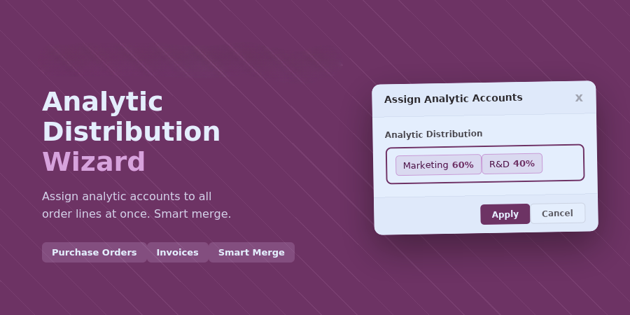

How It Works

By Detalex GmbH — full details, live demo & support on our website.
Details & demo on detalex.de →
Quickly assign one or more analytic accounts to all lines of a purchase order or invoice via a convenient wizard. Existing analytic distributions on the lines are preserved and merged with the new entries.